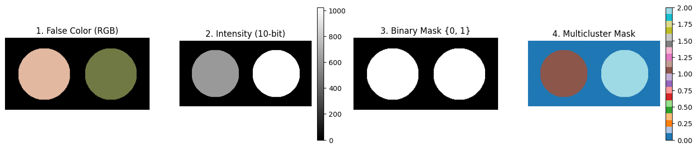
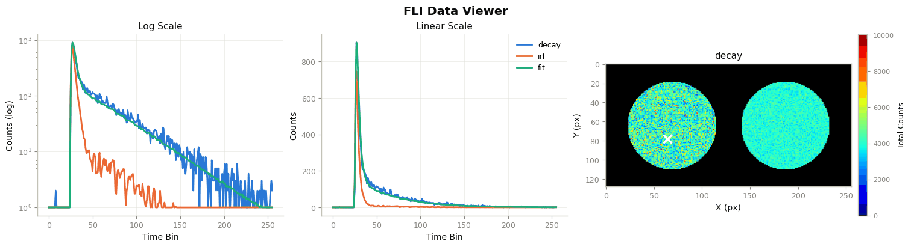
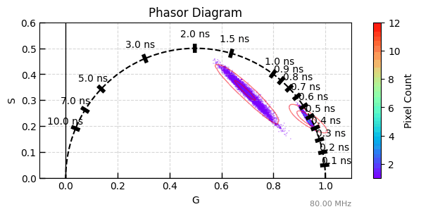
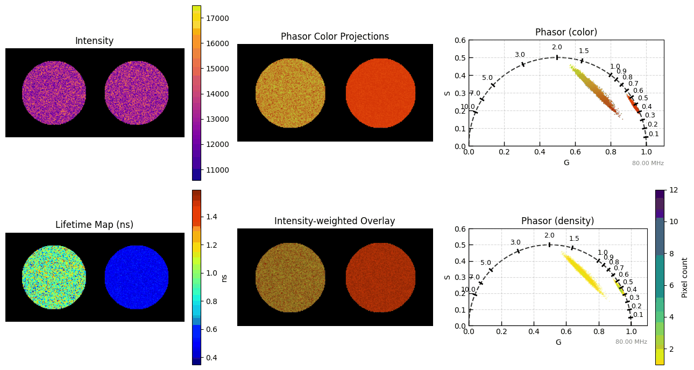
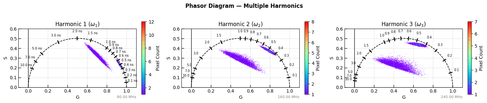
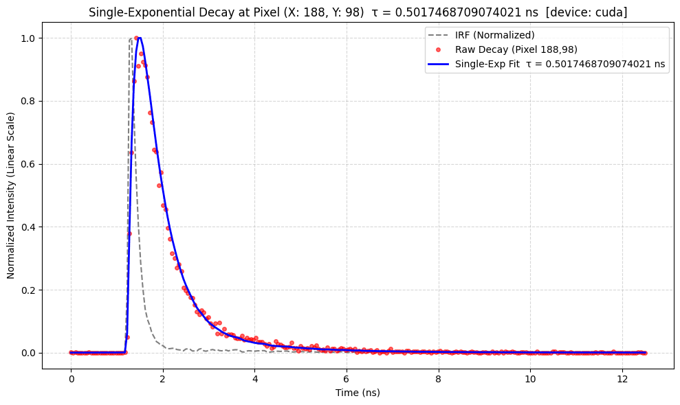
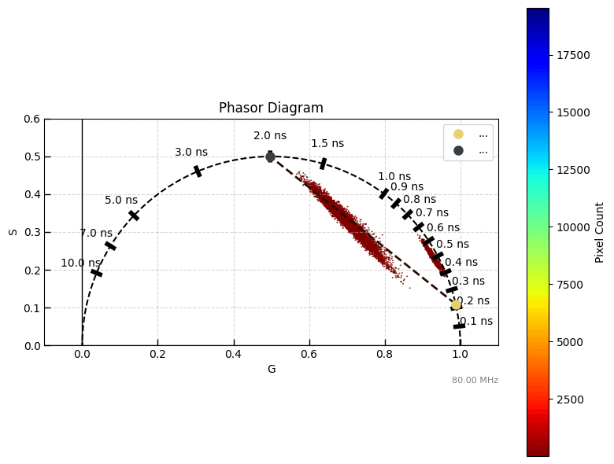
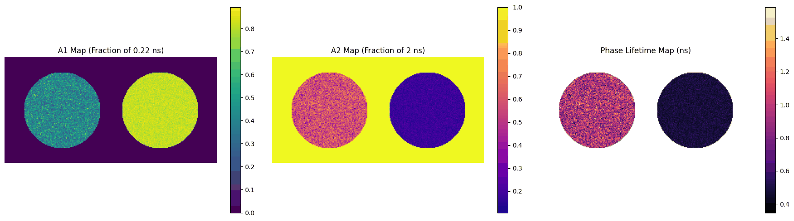
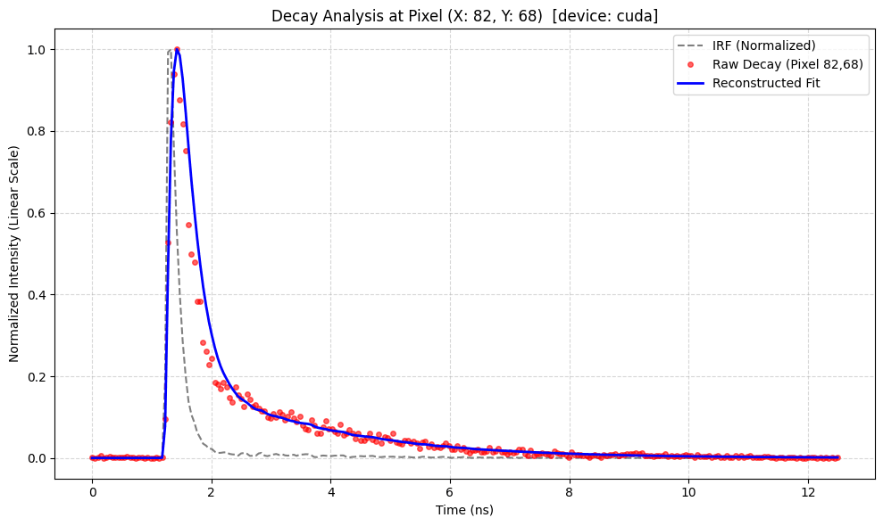

2. Phasor method for FLI Data processing#
A simulated, full 3-D fluorescence lifetime image dataset of a two-well plate is generated (using the same simulator as the “Whole Image Simulation” example), and the phasor method is used to process the data. Each well is assigned a different set of lifetime / FRET parameters.
This example walks through:
Simulating the two-well FLI data
The phasor computation
Phasor calibration with the IRF (if a known dye is used, it can also be used for calibration here — not shown in this example)
3-harmonics computation
Phasor plot (with pixel counts)
Mapping phasor color to pixel color (pixel-wise phasor overlay) and pixel-wise, intensity-weighted phasor color overlay
Phasor lifetime computation
Phasor plot of different harmonics
Curve fitting and fraction computation (based on user-provided lifetime values)
Author - Vikas
## importing the modules required for this work
import sys
import numpy as np
sys.path.insert(0, "ex_helper") # local helper for synthetic image generation
from sim_general_image import ROIMaskGenerator
from pyfli.analysis.utils import random_true_pixel
from pyfli.analyticalWorkflow import AnalyticalHelpers
from pyfli.data_cc import Normalization
from pyfli.data_text import MessageDisplay
from pyfli.data_vnp import ColorProcessor, DataViewer
from pyfli.io import DataOperations
from pyfli.phasor.phasorS import PhasorAnalyzer
from pyfli.simulator import FLIModelImageGenerator
# Path to the local IRF file (e.g. an SPCImage-exported .txt calibration file)
IRF_PATH = "<select file/folder path>"
loader = DataOperations(irf_path=IRF_PATH)
irf_data = loader.load_irf()
gate_delay = 12.5 / irf_data.shape[2]
num_gates = irf_data.shape[2]
freq = AnalyticalHelpers(
laser_period=12.5, gate_delay=gate_delay, num_gate=num_gates
).freq_computation()
INFO:pyfli:Initiating IRF load from: <select file/folder path>
# select the type of decay model to simulate
MODEL_TYPE = "bi-exponential"
if MODEL_TYPE == "bi-exponential":
mono_fraction = 0.0
elif MODEL_TYPE == "mono-exponential":
mono_fraction = 1.0
else:
mono_fraction = 0.4 # fraction of mono-exponential model in sampled data
# Your constant, default configuration
BASE_CONFIG = {
# Modular Noise
"jitter": False, # offset artifact (due to jitter)
"dcr_on": True, # Dark Count Rate (thermal background)
"poisson": False, # Shot noise — Large detector only
"qe_on": True, # Quantum efficiency scaling
"read_noise_on": False, # Gaussian read noise — Large detector only
# Sensor
"sensor_type": "discrete", # "continuous" | "discrete"
"bit": 12,
"dcr": 0.08, # Mean dark counts per bin
"laser_feq": freq[1], # Laser repetition rate (MHz) → period = 12.5 ns
"round_on": True, # Round photon counts to integers — Macro_sim only
"clip_on": True, # Clip at bit-depth ceiling — Macro_sim: max_adc_val; TCSPC: max_bin_count
# Fluorescence Physics (FLI / FRET)
"tau2": (1, 1), # τ₂ ~ TruncNormal(mu=1 ns, sigma=0.5 ns)
"tau2_dist": "beta", # if dist "beta" or "normal" (default)
"tau2_beta_range": (2.5, 0.1),
"efficiency": (1, 1), # FRET efficiency E ~ Beta(2, 5) → [0.1, 1.0]
"A1_fraction": (1, 1), # Amplitude fraction A₁ ~ Beta(2, 5) → [0.05, 0.95]
"photo_count": (2, 5), # Peak intensity ~ Beta(2, 5) × max_adc - large detectors
"mono_fraction": mono_fraction, # Fraction of pixels forced mono-exponential (0.0 = all bi-exp)
"n_cycles": (1_500_000, 2_000_000), # Accumulation cycles — for photon counter
}
def get_config(**kwargs):
"""Create a config by overriding defaults with specific test parameters."""
config = BASE_CONFIG.copy()
config.update(kwargs)
return config
# Shared plotting / phasor configuration used by the two-well example below
colorset = "rainbow"
freq_hz = freq[1] * 1e6
jet_m_well = ColorProcessor().lowest_zero("jet")
bg_color = "black" # either "black" or "white"
ph_cols_ = "viridis_r"
2.1. Two wells example#
A two-well plate is simulated, with each well assigned a different set of ground-truth lifetime / FRET parameters.
from sim_general_image import WellPlateShape
h_well, w_well = 128, 256
generator_well = ROIMaskGenerator((h_well, w_well), top=10, bottom=10, left=10, right=10)
TwoWells = WellPlateShape(rows=1, cols=2, gap=0.15)
custom_intensities_well = [ 0.6, 1.0]
_ = generator_well.plot_preview(
TwoWells,
bit_depth=10,
intensities=custom_intensities_well,
show=True,
)

ROI0_well = {}
ROI1_well = get_config(
tau2_beta_range=(0.1, 1.8),
efficiency = (50, 2),
A1_fraction = (7, 13),
)
ROI2_well = get_config(
tau2_beta_range=(0.05, 0.8),
efficiency = (1000, 1000),
A1_fraction = (15, 5),
)
img_intensity_well = generator_well.generate_intensity_image(
TwoWells, intensities=custom_intensities_well
)
img_cluster_well = generator_well.generate_cluster_mask(TwoWells)
b_bool_mask_well = generator_well.generate_binary_mask(TwoWells)
simulated_img_well = FLIModelImageGenerator(
irf_data=irf_data[120, 40, :],
intensity_image=img_intensity_well,
roi_mask=img_cluster_well,
roi_params=[ROI0_well, ROI1_well, ROI2_well],
method="PHOTON_COUNTER",
verbose=True,
bool_mask=b_bool_mask_well,
)
gt_data_well = simulated_img_well.generate_image()
INFO:pyfli:Generating PHOTON_COUNTER FLI Image [128x256x256]...
Check the decay, IRF, and fit at a randomly selected pixel.
_decay_well = gt_data_well["raw_data"]["decay"]
_irf_well = gt_data_well["raw_data"]["irf"]
x_well, y_well = random_true_pixel(b_bool_mask_well)
TRs_well = gt_data_well["results"]["TR_maps"]
maps_well = gt_data_well["results"]["maps"]
print(f"the non-zero pixel selected for probing is ({x_well}, {y_well})")
irf_norm_well = Normalization(_irf_well).norm_scale(_decay_well)
DataViewer().plot_fli_px(
data_list=[_decay_well, irf_norm_well, TRs_well["fit_map"], TRs_well["residual_map"]],
pixel=(x_well, y_well),
mode=[0, 1, 2],
mode2=[1],
names=["decay", "irf", "fit"],
cmap=jet_m_well,
)
_ = MessageDisplay().get_pixel_summary(data_maps=maps_well, px=(x_well, y_well))
the non-zero pixel selected for probing is (78, 64)

INFO:pyfli:
Pixel (78, 64)
─────────────────────
A 11175.6943
α 0.3627
τ₁ 0.0493
τ₂ 1.8539
R² —
Red.χ² —
Raw.χ² —
v-shift 0.0000
h-shift —
─────────────────────
Distribution of the simulated ground-truth parameters across the image, before computing phasors.
import matplotlib.pyplot as plt
import seaborn as sns
res_well = gt_data_well["results"]["maps"]
b_bool_mask_well_bool = b_bool_mask_well.astype(bool)
valid_px_well = np.argwhere(b_bool_mask_well)
rng_well = np.random.default_rng(0)
sample_idx_well = rng_well.choice(len(valid_px_well), size=min(300, len(valid_px_well)), replace=False)
sample_px_well = valid_px_well[sample_idx_well]
decay_sample_well = _decay_well[sample_px_well[:, 0], sample_px_well[:, 1], :]
irf_sample_well = _irf_well[sample_px_well[:, 0], sample_px_well[:, 1], :]
photon_count_sample_well = res_well["photon_count_map"][sample_px_well[:, 0], sample_px_well[:, 1]]
tau1_valid_well = res_well["tau1_map"][b_bool_mask_well_bool]
tau2_valid_well = res_well["tau2_map"][b_bool_mask_well_bool]
alpha1_valid_well = res_well["alpha1_map"][b_bool_mask_well_bool]
tau_mean_valid_well = res_well["tau_mean_map"][b_bool_mask_well_bool]
efficiency_valid_well = res_well["fret_efficiency_map"][b_bool_mask_well_bool]
photon_count_valid_well = res_well["photon_count_map"][b_bool_mask_well_bool]
tau_dif_well = tau2_valid_well - tau1_valid_well
fig, axes = plt.subplots(2, 5, figsize=(15, 8))
axes[0, 0].plot(decay_sample_well.T)
axes[0, 0].set_title("decay")
axes[0, 0].set_xlabel("bins")
axes[0, 0].set_ylabel("Photon Counts")
axes[0, 1].plot((irf_sample_well * photon_count_sample_well[:, None]).T)
axes[0, 1].set_title("irf * photon_count")
axes[0, 1].set_xlabel("bins")
axes[0, 1].set_ylabel("Photon Counts")
sns.histplot(data=tau_mean_valid_well, ax=axes[0, 2], kde=True, stat="density", color="tab:orange", alpha=0.4)
axes[0, 2].set_title("mean tau")
axes[0, 2].set_xlabel("Lifetime (ns)")
sns.histplot(data=tau_dif_well, ax=axes[0, 3], kde=True, stat="density", color="tab:orange", alpha=0.4)
axes[0, 3].set_title("Δ tau")
axes[0, 3].set_xlabel("Lifetime (ns)")
sns.histplot(data=efficiency_valid_well, ax=axes[0, 4], kde=True, stat="density", color="tab:green", alpha=0.4)
axes[0, 4].set_title("FRET Efficiency")
axes[0, 4].set_xlabel("Efficiency")
sns.histplot(data=tau1_valid_well, ax=axes[1, 0], kde=True, stat="density", color="tab:green", alpha=0.4)
axes[1, 0].set_title("tau1")
axes[1, 0].set_xlabel("Lifetime (ns)")
sns.histplot(data=tau2_valid_well, ax=axes[1, 1], kde=True, stat="density", color="tab:red", alpha=0.4)
axes[1, 1].set_title("tau2")
axes[1, 1].set_xlabel("Lifetime (ns)")
sns.histplot(data=alpha1_valid_well, ax=axes[1, 2], kde=True, stat="density", color="tab:purple", alpha=0.4)
axes[1, 2].set_title("alpha1")
axes[1, 2].set_xlabel("Amplitude Fraction")
axes[1, 2].set_xlim(0.0, 1.0)
axes[1, 3].scatter(tau_dif_well, alpha1_valid_well, s=8, alpha=0.3)
axes[1, 3].set_xlabel("Δ tau")
axes[1, 3].set_ylabel("fraction")
sns.histplot(data=photon_count_valid_well, ax=axes[1, 4], kde=True, stat="density", color="tab:purple", alpha=0.4)
axes[1, 4].set_title("photon_count")
axes[1, 4].set_xlabel("photons")
plt.tight_layout()
plt.show()
2.1.1. Phasor computation and visualization#
time_axis_ns_well = np.linspace(0, gate_delay * num_gates, _irf_well.shape[2])
phasor_well = PhasorAnalyzer(
frequency_hz=freq_hz, time_axis_ns=time_axis_ns_well, n_harmonics=3
)
G_well, S_well = phasor_well.create_phasor_gpu(_decay_well)
Gc_well, Sc_well = phasor_well.calibrate_pixelwise(G_well, S_well, _irf_well)
tau_map_ns_well = phasor_well.compute_lifetime(Gc_well[0], Sc_well[0])
im1_well = phasor_well.plot_phasor_diagram(
Gc_well[0],
Sc_well[0],
mask=b_bool_mask_well,
hexbin_color=colorset,
figsize=(7, 3),
half_circle=True,
kdeplot=True,
kde_color="red",
kde_levels=3,
kde_linewidths=1,
kde_alpha=0.5,
)

im2_well = phasor_well.plot_overlay_subplots(
_decay_well,
Gc_well[0],
Sc_well[0],
mask=b_bool_mask_well,
colormaps=["plasma", "jet", "turbo_r", ph_cols_],
figsize=(13, 7),
xlim=(0, 1.1),
bg_color=bg_color,
transpose=False,
kdeplot=False,
)

2.2. Additional steps to plot different harmonics#
im3_well = phasor_well.plot_phasor_harmonics(
Gc_well,
Sc_well,
harmonics=(1, 2, 3),
mask=b_bool_mask_well,
hexbin_color=colorset,
figsize=(15, 3),
)

2.2.1. Phasor of fitting based on the guessed lifetime#
Selecting the mono-exponential model for reconstructing the fit generates a general set of fit values.
x_well, y_well = random_true_pixel(b_bool_mask_well)
fitting_type_well = "mono-exponential" # "mono-exponential" or "bi-exponential"
if fitting_type_well == "mono-exponential":
tau_ns_well = 0.8
phasor_well.plot_pixel_fit_single_exp(
_irf_well, _decay_well, tau_map_ns_well, y_well, x_well, log_scale=False
)
else:
tau1_ns_well, tau2_ns_well = 0.8, 1.4
A1_well, A2_well = phasor_well.compute_fractions(
Gc_well[0], Sc_well[0], tau1_ns_well, tau2_ns_well
)
reconstructed_decay_well = phasor_well.analyze_biexponential_and_reconstruct(
Gc_well[0], Sc_well[0], _irf_well, tau1_ns=tau1_ns_well, tau2_ns=tau2_ns_well, plot=True
)
print(f"Reconstructed decay shape: {reconstructed_decay_well.shape}")
phasor_well.plot_pixel_fit(
_irf_well, _decay_well, reconstructed_decay_well, y_well, x_well, log_scale=False
)

Selecting the bi-exponential model for reconstructing the fit generates a general set of fit values.
x_well, y_well = random_true_pixel(b_bool_mask_well)
fitting_type_well = "bi-exponential" # "mono-exponential" or "bi-exponential"
if fitting_type_well == "mono-exponential":
tau_ns_well = 1.0
phasor_well.plot_pixel_fit_single_exp(
_irf_well, _decay_well, tau_map_ns_well, y_well, x_well, log_scale=False
)
else:
tau1_ns_well, tau2_ns_well = 0.22, 2
A1_well, A2_well = phasor_well.compute_fractions(
Gc_well[0], Sc_well[0], tau1_ns_well, tau2_ns_well
)
reconstructed_decay_well = phasor_well.analyze_biexponential_and_reconstruct(
Gc_well[0], Sc_well[0], _irf_well, tau1_ns=tau1_ns_well, tau2_ns=tau2_ns_well, plot=True
)
print(f"Reconstructed decay shape: {reconstructed_decay_well.shape}")
phasor_well.plot_pixel_fit(
_irf_well, _decay_well, reconstructed_decay_well, y_well, x_well, log_scale=False
)
Reconstructed decay shape: (128, 256, 256)


